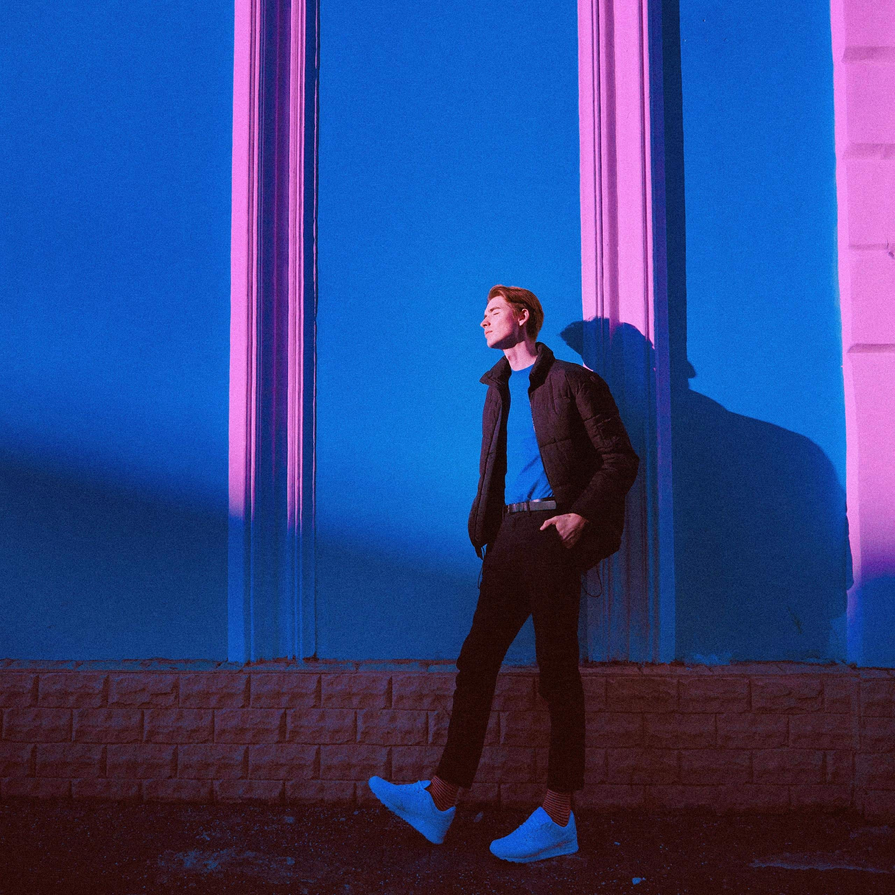

Фритрек и нулевой спринт: Подготовка к работе
<the beginning>
Это было самое начало пути. На этом этапе важно было проникнуться основами и настроиться на учёбу. И, возможно, подумать, как новые знания могут повлиять на ваше будущее.
На тот момент я уже прошёл курс бэкенд-разработчика на Python, но мне хотелось узнать, какого это — верстать сайты. Я начал изучать HTML и CSS, и с самого первого дня мне понравилось. Было что-то особенное в том, чтобы писать код и сразу видеть результат. В бэкенде всё скрыто — запросы, базы данных, логика, которая работает «за кадром». А здесь — всё перед глазами: изменил стиль, обновил страницу, и вот, кнопка стала красивее, текст выровнялся, элементы встали на свои места.